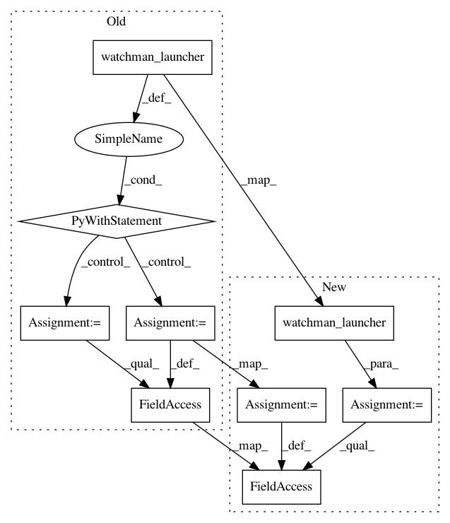

3b77f6b6c38fea6616cae10ca8e0c3a20782934a,tests/python/pants_test/pantsd/subsystem/test_watchman_launcher.py,TestWatchmanLauncher,test_maybe_launch_already_alive,#TestWatchmanLauncher#,41
Before Change
def test_maybe_launch_already_alive(self):
mock_watchman = self.create_mock_watchman(True)
with self.watchman_launcher() as wl:
wl.watchman = mock_watchman
self.assertTrue(wl.maybe_launch())
mock_watchman.is_alive.assert_called_once_with()
self.assertFalse(mock_watchman.launch.called)
def test_maybe_launch_error(self):
After Change
def test_maybe_launch_already_alive(self):
mock_watchman = self.create_mock_watchman(True)
wl = self.watchman_launcher()
wl.watchman = mock_watchman
self.assertTrue(wl.maybe_launch())
mock_watchman.is_alive.assert_called_once_with()
self.assertFalse(mock_watchman.launch.called)
In pattern: SUPERPATTERN
Frequency: 3
Non-data size: 9
Instances
Project Name: pantsbuild/pants
Commit Name: 3b77f6b6c38fea6616cae10ca8e0c3a20782934a
Time: 2016-09-12
Author: benjyw@gmail.com
File Name: tests/python/pants_test/pantsd/subsystem/test_watchman_launcher.py
Class Name: TestWatchmanLauncher
Method Name: test_maybe_launch_already_alive
Project Name: pantsbuild/pants
Commit Name: 3b77f6b6c38fea6616cae10ca8e0c3a20782934a
Time: 2016-09-12
Author: benjyw@gmail.com
File Name: tests/python/pants_test/pantsd/subsystem/test_watchman_launcher.py
Class Name: TestWatchmanLauncher
Method Name: test_maybe_launch_error
Project Name: pantsbuild/pants
Commit Name: 3b77f6b6c38fea6616cae10ca8e0c3a20782934a
Time: 2016-09-12
Author: benjyw@gmail.com
File Name: tests/python/pants_test/pantsd/subsystem/test_watchman_launcher.py
Class Name: TestWatchmanLauncher
Method Name: test_maybe_launch